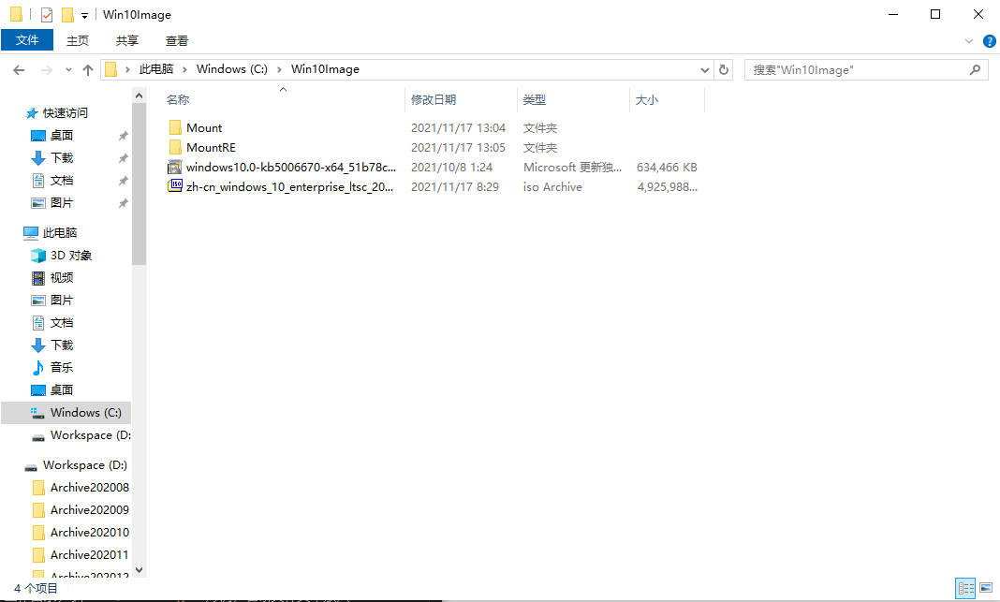
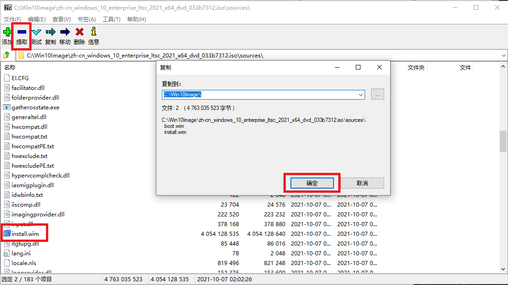
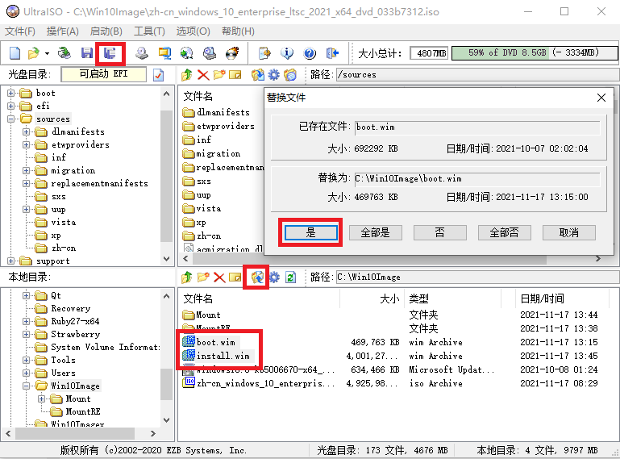

Windows 10 Build 1904x ISO 中存在的问题和解决方案
在 Windows 10 Build 19041 的官方 ISO 正式发布以后，我在远景写了一篇帖子来叙述微软在进行系统打包时出现的纰漏。 然而直到最新的 Windows 10, Version 21H2 即 Windows 10 Build 19044 该纰漏一直存在，看起来微软无暇关注 Windows 10 了， 毕竟 Windows 11 发布而其官方版本 ISO 并不存在这样的纰漏。
为了能够让更多的人注意到相关纰漏，于是我将相关内容梳理到本文以供参考。
问题列表
{ISO 根目录}\source\boot.wim在集成累积更新后并没有重新生成 WIM 镜像，于是在该镜像中存在旧版文件的残留， 大概会导致 200MB 的体积增加。Windows 10 Enterprise LTSC 2021 官方 ISO 的boot.wim文件体积高达 700MB。{ISO 根目录}\source\install.wim虽然在集成累积更新后重新生成了 WIM 镜像，但是其中的 Windows RE 映像即winre.wim只集成了组件堆栈补丁没有集成累积更新，于是 Windows RE 的版本依然是 19041.1。
潜在影响
- 因为
boot.wim体积增加，在内存捉襟见肘的某些 32 位计算机很可能无法正常引导到安装程序。 - 因为
winre.wim没有集成累积更新，用户可能依旧遭遇着一些已经修复的恢复环境下的问题。 - 强迫症患者和完美主义者会对此表示很不爽。
解决方案
本段以 Windows 10 Enterprise LTSC 2021 64 位官方 ISO 为例，且假定你有一台安装了 7-Zip 和 UltraISO 的 Windows 10 的计算机。
下载累积更新
由于 Windows 10 Enterprise LTSC 2021 的版本号为 10.0.19041.1288，从 Windows 10 更新历史记录页面可得知对应的累积更新为 KB5006670，去 Microsoft 更新目录网站可得知 KB5006670 的直链为：
- x86 http://download.windowsupdate.com/c/msdownload/update/software/secu/2021/10/windows10.0-kb5006670-x86_6666ab09e61dc4f2f76bb3efc1a3c3631c2fb627.msu
- x64 http://download.windowsupdate.com/c/msdownload/update/software/secu/2021/10/windows10.0-kb5006670-x64_51b78c3627885149a65b09dc92a936935017ff58.msu
- ARM64 http://download.windowsupdate.com/c/msdownload/update/software/secu/2021/10/windows10.0-kb5006670-arm64_c91c87a424499a4051b66026ed73bb4dda7bc9d7.msu
使用浏览器或者第三方工具将文件下载并保持原来的文件名即可。
准备工作目录
首先我们需要创建一个工作目录，以 C:\Win10Image 为例；在该文件夹中放入你下载的官方 ISO 和累积更新且创建 Mount 和 MountRE 目录，效果如图。

提取必需文件
使用 7-Zip 从你下载的官方 ISO 中，将 ISO 中 Source 目录下的 boot.wim 和 install.wim 提取到工作目录，如图所示。

命令行环境准备
以管理员身份运行命令提示符，并输入下述命令切换到工作目录。
cd /d C:\Win10Image
命令行输出结果如下。
1 | |
重新生成 boot.wim
在准备好的命令环境中输入下述命令即可。
1 | |
命令行输出结果如下。
1 | |
挂载 install.wim
由于 Windows 10 Enterprise LTSC 2021 的 install.wim 只有一个 Index，于是在准备好的命令环境中输入下述命令即可。
DISM /Mount-Wim /WimFile:install.wim /Index:1 /MountDir:Mount
命令行输出结果如下。
1 | |
挂载 install.wim 内的 winre.wim
一般来说未经过 OOBE 阶段的 Windows RE 映像存放位置在 Mount\Windows\System32\Recovery\Winre.wim.
由于 Windows 10 Enterprise LTSC 2021 的 winre.wim 只有一个 Index，于是在准备好的命令环境中输入下述命令即可。
DISM /Mount-Wim /WimFile:Mount\Windows\System32\Recovery\Winre.wim /Index:1 /MountDir:MountRE
命令行输出结果如下。
1 | |
为 winre.wim 集成 KB5006670
在准备好的命令环境中输入下述命令即可。
DISM /Image:MountRE /Add-Package /PackagePath:windows10.0-kb5006670-x64_51b78c3627885149a65b09dc92a936935017ff58.msu
命令行输出结果如下。
1 | |
保存结果并重新生成 winre.wim
在准备好的命令环境中输入下述命令即可。
1 | |
命令行输出结果如下。
1 | |
保存结果并重新生成 install.wim
在准备好的命令环境中输入下述命令即可。
1 | |
命令行输出结果如下。
1 | |
生成修改后的 ISO
使用 UltraISO 或类似工具将原 ISO 的 Source 目录下 boot.wim 和 install.wim 替换并另存为你想要保存的文件即可。

示例映像
zh-cn_windows_10_enterprise_ltsc_2021_x64_dvd_033b7312_mouri_repacked.iso
- SHA256: 62193E23BCC2D66A60807965B8CEB7C01887E7336A5C10B2D436432B2FE9C4BE
- 直链
- 百度网盘
- 临时网盘 (由 subaobao_ok 提供)
- 链接：https://pan.adycloud.com/s/mZeun
- 密码：bbs.pcbeta.com
- 天翼云盘 (由 subaobao_ok 提供)
- 链接：https://cloud.189.cn/t/eq2mQnV3qIfa
- 访问码:9tov
zh-cn_windows_10_enterprise_ltsc_2021_x86_dvd_30600d9c_mouri_repacked.iso
- SHA256: 239278A14ED0975AE99199352CDC1F54615D19A7DC8B7D753645A44B57A388EE
- 直链
- 百度网盘
参考文献
- Windows 10 Version 2004 MSDN ISO 已知问题汇总
- Windows 10 更新历史记录
- Microsoft 更新目录
- 【毛利重打包版（x86 和 x64）】Windows 10 Enterprise LTSC 2021【含天翼云分流】
相关内容
Windows 研究笔记本博客所有文章除特别声明外，均采用 CC BY-NC-ND 4.0 协议 ，转载请注明出处！